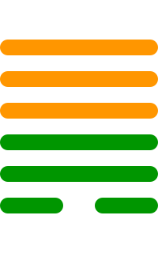

第四十四卦
姤卦

卦辞
女壮，勿用取女。
姤卦象征相遇、邂逅与阴长。卦辞意为：女子强壮，不要娶这样的女子。姤卦教导我们要警惕不适当的相遇，防止阴柔势力过强。
彖传
姤，遇也，柔遇刚也。勿用取女，不可与长也。天地相遇，品物咸章也。刚遇中正，天下大行也。姤之时义大矣哉。
彖传说：姤，遇也，柔遇刚也。勿用取女，不可与长也。天地相遇，品物咸章也。刚遇中正，天下大行也。姤之时义很大啊。
象传
天下有风，姤。后以施命诰四方。
象传说：天下有风，就是姤卦。君子应当效法这种精神，施行命令，告谕四方。天下有风，象征命令的传播。
爻辞
初六：系于金柅，贞吉。有攸往，见凶。羸豕孚蹢躅
系于金柅，坚守正道吉祥。有所往，见凶险。瘦猪诚信徘徊。
初六爻位于最下方，系于金柅。系于金柅，坚守正道吉祥。有所往，见凶。瘦猪诚信徘徊，表示谨慎。
九二：包有鱼，无咎，不利宾
包有鱼，无灾害，不利于宾客。
九二爻得中，包有鱼。包有鱼，无咎，不利于宾客，表示自有之物。
九三：臀无肤，其行次且，厉，无大咎
臀无肤，其行趑趄，危险，无大灾害。
九三爻位置不当，臀部无肤。臀部无肤，行走困难，危险，无大咎，表示虽有困难但无大害。
九四：包无鱼，起凶
包无鱼，起有凶险。
九四爻接近君位，包无鱼。包中无鱼，起有凶险，表示失去机会。
九五：以杞包瓜，含章，有陨自天
以杞包瓜，含文章，有陨自天。
九五爻居中尊位，以杞包瓜。以杞包瓜，含文章，有陨自天，表示天命所归。
上九：姤其角，吝，无咎
遇其角，困难，无灾害。
上九爻位于极点，遇其角。遇其角，困难，无咎，表示虽困难但无害。